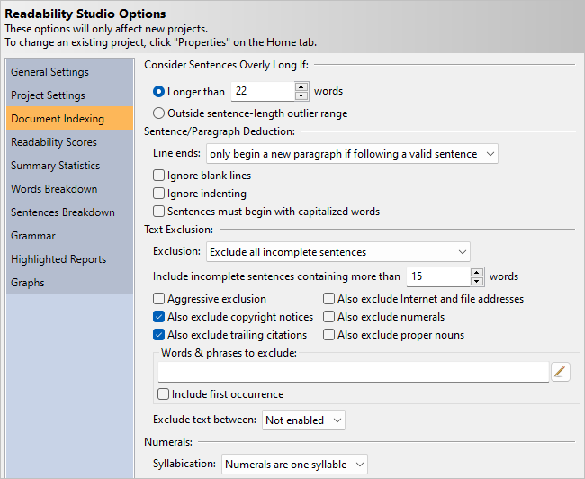
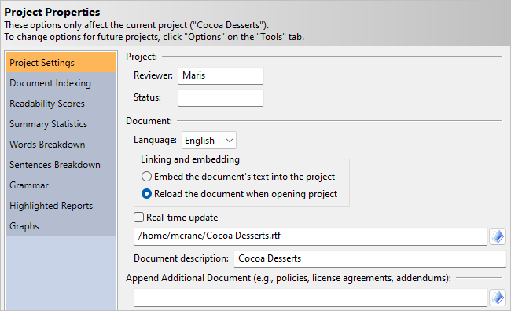

9 Program & Project Options
Readability Studio offers many customizable features, including:
- How documents are parsed and analyzed.
- How results (e.g., statistics and graphs) are displayed.
- How projects connect to the documents they are analyzing.
These options can be configured both globally and for individual projects. Note that changing options globally will affect all future projects, but will not affect currently existing projects.
To set these options globally, click the Options button on the Tools tab to open the Options dialog:

If you wish to change options for an individual project, then click the Properties button on the Home tab to open the Project Properties dialog:

9.1 General Settings
The options on this page manage the program’s general settings.
Settings
Import: Click this button to import program settings and defaults from a file.
Export: Click this button to export the current program settings to a file. This includes all your settings on the Options dialog, your defaults for the New Project wizard, and your printer headers & footers.
Reset: Click this button to reset the program settings to the defaults.
Internet
User agent: Enter into this field your user agent. The user agent is the name of the client program that is sent to websites when you try to read and download pages from them.
Disable SSL certificate verification: Check this option to disable SSL certificate verification when reading and downloading webpages. This can be used to connect to self-signed servers or other invalid SSL connections.
Disabling SSL verification makes the communication insecure.
Use JavaScript cookies: Check this option to scan for any cookies meant to be sent via JavaScript when reading or downloading a page. If any cookies are found, then the page will be re-read with the cookies being sent. This is useful when connecting to pages that won’t load as expected unless certain cookies are sent back to the server.
This will result in an additional call to read each webpage and is only recommended if JavaScript is being used to block non-browser connections.
Persist cookies during each harvest: If using JavaScript cookies, check this option to save and resend cookies from each site. As each site is harvested, any cookies from that site and previous ones will be sent. This is useful if harvesting pages from the different portions of a website that may expect the same cookies.
Note that cookies will only persist for the pages being harvested from one instance of the Web Harvester dialog. All cookies will be cleared once the dialog’s session is complete.
Warnings & Prompts
Customize: Click this button to display the Warnings & Prompts Display dialog. This dialog enables you to display or suppress various warnings and prompts, including:
- Warn about projects being opened as read-only. This warning is shown when a project will be opened as read-only. If a project is read-only, then you cannot save any changes to it.
- Prompt when removing a test from a project. When removing a readability test from a project, a prompt will be shown to confirm this action.
- Warn about documents that do not contain any words. If you attempt to analyze a document containing no valid words, then you will be warned that no calculations will be performed.
- Warn about documents containing less than 20 words. If you attempt to analyze a document containing less than 20 valid words, then you will be prompted whether you wish to continue. If a document contains such a low amount of text, then most tests will produce questionable results.
- Warn about documents containing less than 100 words. This warning is shown when a document being analyzed contains less than 100 valid words. If a document contains a low amount of text, then some factors (e.g., word and syllable counts) will be standardized for some tests.
- Warn about documents that contain sentences split by paragraph breaks. This warning is shown when a document being analyzed contains what appears to be sentences with paragraph breaks in them. In this situation, the sentences will not be indexed properly, and it is recommended to fix the document.
- Warn about documents that contain long incomplete sentences that will be included in the analysis. This warning is shown when a document being analyzed contains sentences that, although missing terminating punctuation, will be included in the analysis because of their length. To change this behavior, adjust the option Include incomplete sentences containing more than [15] words.
- Prompt if a document should switch to include sentences in the analysis. If a document is excluding a high volume of incomplete sentences, then you will be prompted about switching to include those sentences in the analysis.
- Prompt if a custom NDC test’s proper noun settings differ from the standard NDC test. By default, New Dale-Chall requires that the first instance of each proper noun be seen as unfamiliar. If you are creating a custom New Dale-Chall test which uses different proper-noun logic, then you will be prompted whether this is your intent.
- Prompt about New Dale-Chall using a different text exclusion method from the system default. By default, New Dale-Chall uses its own method for excluding text, which may differ from the system default’s method. This message will be shown to warn about this.
- Prompt about Harris-Jacobson using a different text exclusion method from the system default. By default, Harris-Jacobson uses its own method for excluding text, which may differ from the system default’s method. This message will be shown to warn about this.
- Warn when a custom test’s numeral settings will be adjusted. Some tests (e.g., Harris-Jacobson) require numerals to be excluded from the analysis. This warning will be shown if a custom test needs its numeral settings adjusted to take such rules into account.
- Warn about German stemming not supporting proper noun detection. This warning is shown when creating a custom test that uses German stemming and treats proper nouns as familiar.
- Warn about unique-value histograms requiring midpoint axis labels. If you specify unique values as your histogram bin sorting method, then midpoint interval display will need to be used. Because each bin (i.e., bar) will represent only one value, the histograms will not have ranges of values for its intervals. Therefore, cutpoints will not be applicable and midpoint axis labels will be used instead. If you have cutpoints as the interval type and choose unique-value bin sorting, then this warning will be shown before adjusting the interval display.
- Prompt about auto-searching for missing files. By default, projects link to the documents that they analyze. When you open a project, the document will be reanalyzed to include any recent changes. If the document cannot be found, then the program will ask if it should search for a document by the same name. This search will be relative to the project file’s location. Unchecking this option will suppress this prompt and the program will automatically search for and load the document.
- Prompt about re-linking to a document that has been embedded. By default, a project will link to the document it is analyzing. When you click the Edit Document button (on the Home tab), the document will be opened in its default editor. However, if you have chosen to embed the document into the project, then this prompt will appear. It will ask you whether you want to change this setting to link to the document and then edit it, or continue embedding the document and then edit the embedded text. Note that if you continue to embed the document and edit the embedded text, then your changes will only be reflected in your project—your changes will not appear in the original document.
- Prompt about failing to load a project that is missing its embedded text. When opening a project which embeds the document’s text, then an error message will be shown if the embedded text is not found within the project.
- Check if ClearType is turned on. If ClearType is turned off, then the program will ask you about enabling it. ClearType makes fonts smoother and easier to read. This applies to the Windows® edition of Readability Studio only.
- Prompt about whether to set the application’s word exclusion list from a project. When adding a word exclusion list from the ribbon for the first time, you will be prompted about setting this list to be included in all future projects.
The following are informational messages shown interactively in the program:
- Prompt about how windows can be exported from the Save button.
- Prompt about how double-clicking a test can show its help.
- Prompt about how background images will not be upscaled beyond their original size when zooming into a graph.
- Prompt about how settings are embedded in projects and how to edit them.
Log
Verbose logging: Select this option to include extended information in the log report.
Append daily log: Select this option to append to the previous log report (when running the program on the same day). The default behavior is to clear the log file every time the program starts.
Developer
Show Developer tab: Select this option to show the Developer tab on the ribbon. The Developer tab provides access to the Lua script editor, which can be used to automate tasks and run custom analyses. Uncheck this to hide the tab if you do not use these features.
Allow Lua scripts to access system commands: Select this option to enable the io, os, and debug libraries in the Lua scripting environment. By default, these libraries are disabled for security reasons.
Enabling this allows the use of Lua’s built-in file I/O, system commands, and debugging features. Only enable this if you trust the scripts you are running.
This setting only affects Lua’s own standard libraries. Lua scripts can still read or write files through functions provided by this application, regardless of this option.
Changing this will take effect the next time the program is started.
9.2 Project
The options on this page customize your general project settings.
Project
Reviewer: Enter your name in this field as it should appear in exported reports.
Status: Enter in this field the status of the document(s) that this project is reviewing (e.g., DRAFT). This information will appear in reports when you export all.
Batch options
Minimum document word count: Enter in this field the minimum number of words a document must have to be included in a batch. Any document which does not meet this threshold will be removed from a batch during the analysis.
File path display:
Partially truncate the file path: Select this option to display the longer file paths with their folder names replaced by ellipses in all of the lists.
Show only the file name: Select this option to just display the file names in all of the lists.
Show the full file path: Select this option to display the full paths of the files in all of the lists.
Document
Language: Select from here the language of the document(s) that you will be analyzing. The language selected here will affect how syllables are counted and control which tests, word lists, and grammar features will be made available. For example, if Spanish is selected, then only Spanish tests will be available and the document will be analyzed using the Spanish syllable counter.
Real-time update: Select this option to automatically reload the project as the source document is edited externally. This allows for editing the document in another program (e.g., Word) and having the results update in Readability Studio in real time. (This is only relevant for standard projects and for when the project is linked to a local document.)
The changes will take effect in Readability Studio only after you save the document from the other program. Real-time update works by checking the modified time on the document every five seconds; if the document’s timestamp has changed, then it will be reloaded.
Document description: Enter into this field a description of the document. Note that for some file formats, the program will pre-fill this field with the document’s subject or title information.
Append Additional Document (e.g., policies, license agreements, addendums)
Enter into this field an additional document to append to the regular document. This document will be appended to the original document’s text (or embedded text) during the project’s analysis. This is useful if your project is analyzing a document, but also needs to include a generic template (e.g., license agreement). For example, you could specify a generic insurance policy in this field, and a customized entitlement as the main document. When the project analyzes the entitlement, the policy will be appended to the entitlement (in memory) and both will be analyzed as one document.
Note that for batch projects, this document will be appended to each document in the batch.
Also note that your original document is not affected by this process. The original and additional documents are only combined within Readability Studio while it analyzes them.
9.3 Document Indexing
The options here specify how your documents should be parsed and analyzed.
Consider Sentences Overly Long If
Longer than [22] words: Select this option to consider sentences overly long if they exceed the word count specified in this field. The default word count is 22, but can be changed as needed.
Considering sentences with more than 22 words to be overly long is based on research from Kincaid (19).
Outside sentence outlier range: Select this option to consider sentences overly long if they are comparatively longer than other sentences in the document. This option is only recommended for situations where most of the sentences have an acceptable length, but a few (very) long sentences skew the average. This option is useful for finding these extreme sentences.
These sentences can be viewed in the Grammar and Long Sentences windows in the Grammar section.
Sentence/Paragraph Deduction
Ignore blank lines: Select this option to not consider incomplete sentences followed by blank lines as the end of the current sentence and paragraph. If an incomplete sentence is encountered, any blank lines after it will be skipped and the sentence will be merged with the following sentence.
This option is not recommended for documents that contain headers or lists that rely on blank lines to separate them from the narrative text. Refer to Section 21.3 for more information.
Ignore indenting: Select this option to not consider indented lines following incomplete sentences as the start of a new paragraph. This option is recommended for documents that center or left align their text.
The options Ignore blank lines and Ignore indenting are disabled if Line ends always begin a new paragraph is selected. In this case, line feeds will always indicate the end of a paragraph, whether or not it is followed by blank or indented lines.
Sentences must begin with capitalized words: Select this option to have sentence deduction assume that all sentences begin with capitalized words. By default, Readability Studio takes into consideration writing that does not capitalize the first word of every sentence. To change this behavior, select this option and the program will be more grammatically strict when deducing sentences.
9.3.1 Text Exclusion
Include incomplete sentences containing more than [15] words: If a sentence is missing terminating punctuation (e.g., . or ?) then it will be considered incomplete. Lines of text missing this punctuation are generally headers or list items that should be excluded from the analysis. However, there are times when a legitimate sentence is simply missing this punctuation (due to writer or formatting error) and should be included in the analysis. To override this, enter into this field the maximum words that an incomplete sentence can have. Any sentence containing more than this number of words will be considered complete, even if its terminating punctuation is absent.
Lines of text that resemble equations will continue to be marked as incomplete. Also, if Aggressively exclude is enabled, then list items with more words than this threshold will also continue to be excluded.
Note that if you are not excluding any text, this option will still take effect for tests which explicitly exclude headers (e.g., Harris-Jacobson).
Aggressively exclude: Select this option to mark any valid sentence as incomplete if a). it is between at least two incomplete sentences and b). is less than 10 words. For example:
- Products by Industry
- Which Product is Right for You?
- Products Reviews
By default, the question mark would cause the second sentence to be included in an analysis. Checking this checkbox will instruct the program to consider this sentence as part of the surrounding list items and exclude it.
Finally, checking this will also affect sentences that end with colons or semicolons at the end of a line. Ones that end with semicolons will be excluded. Ones that end with colons that only contain one word will be excluded.
If Also exclude trailing citations is enabled, then checking this option will also cause citation deduction to be more aggressive. By default, only citation blocks in the lower half of the document are excluded. Enabling this option will tell the program to search for citations in the lower three-fourths of the document.
If Also exclude copyright notices is enabled, then checking this option will also cause that feature to include larger paragraphs in its analysis.
Also exclude copyright notices: Select this option to ignore copyright and trademark notices when calculating statistics. Throughout the document, any paragraph consisting of one or two sentences which has a © symbol near the beginning is considered a copyright notice. (Three-sentence paragraphs will also be examined if Aggressively exclude is enabled.)
Near the end of the document, the final paragraphs will be more aggressively reviewed. If the last two paragraphs contain one or two sentences and contain phrases such as All rights reserved or copyright or symbols such as © or ®, then they will be considered copyright notices.
Also exclude trailing citations: Select this option to ignore a citation section at the end of the document when calculating statistics. If this option is selected, then the program will search for a citation header near the end of the document and exclude any paragraphs after it. A citation header will be any header which contains 5 (or less) words and any of the following labels:
- Anmerkungen
- Bibliographie
- Bibliography
- Bibliografía
- Citations
- Einzelnachweise
- For More Information
- Literatur
- Literaturverzeichnis
- Para Mas Informacion
- Reference
- References
- Referencias
- Related Publications
- Relación de los Trabajos Publicados
- Sources
- Textbooks and Curricula
- Works Cited
The program will stop excluding text after a References header if it detects a paragraph that does not appear to be a citation. This is useful for when a references section is in the middle of a document, followed by other content.
Also exclude Internet and file addresses: Select this option to ignore URLs (i.e., Internet addresses) and filepaths. Note that this applies to words inside of complete sentences, not just incomplete. For example:
Readability Studio is available from www.readabilitystudio.com.
If this option is selected, then www.readabilitystudio.com will be excluded from every analysis. This includes sentence-length, word-length, and syllable-count calculations.
Also exclude numerals: Select this option to ignore all numbers. For example:
Upon arrival at 5:30PM, please be ready to cover the $75 boarding fee.
would be analyzed as this:
Upon arrival at _____, please be ready to cover the _____ boarding fee.
This option may be recommended for mathematical works which contain equations and numbers that may skew the results.
Also exclude proper nouns: Select this option to ignore all proper names of people, places, and things. A useful example would be medical documents that contain drug names that the readers will be familiar with. Rather than penalizing the document for containing these complex product names (that cannot be substituted with simpler words), this option will entirely remove them from the analysis.
Words & phrases to exclude: Enter the path to a text file containing words and phrases to ignore into this field. Any words or phrases from this file will be excluded from all calculations. The format for this text file is a single column, where each line is a separate word or phrase. For example:
ex nihilo
quantum fluctuations
particles
With the above exclusion list, this text:
Quantum Fluctuations are fluctuations of particles within the quantum foam that appear ex nihilo and annihilate each other.
would be analyzed as this:
_____ are fluctuations of _____ within the quantum foam that appear _____ and annihilate each other.
This would be seen as a 13-word sentence, with all the phrases from the exclusion list removed. Note that the first instance of fluctuations is removed from the analysis because it is part of the phrase Quantum Fluctuations (which is on the exclusion list). However, the second instance of fluctuations will be included because it is not part of the phrase that we requested to ignore. To exclude all instances of fluctuations, include it in the list on a separate line.
This phrase list can be edited by clicking the button next to this field, which will open the Edit Word/Phrase List dialog.
Include first occurrence: Select this option to not exclude the first occurrence of any word or phrase from your exclusion list. All remaining occurrences of these words in the document will be excluded. This is useful if you wish to only analyze the first instance of certain difficult words.
Exclude text between: Selects whether to exclude all text in between a certain pair of tags. For example, select [ and ] and any text inside a pair of left and right square brackets will be ignored in the analysis. Along with excluding the bracketed words, any full paragraphs and sentences wrapped inside of these tags will also be excluded (which will be reflected in the statistics). Refer to Section 16.4 for an example.
These options are not available if Do not exclude any text is selected.
9.3.2 Numerals
These options are not applicable if Also exclude numerals is checked.
9.3.3 Edit Word/Phrase List
This dialog can edit either a word or phrase list.
File containing list: Enter the path to the list into this field.
After selecting your list file, its words/phrases will be displayed in the grid below the file-path field. In this grid, you can edit your list with the following keyboard commands:
- Del (, ) or ⌫ ()—removes the selected item(s) from the list.
- Ins—edits the selected item in the list. Double-clicking an item with the mouse will also edit it.
- Ctrl+Ins (, ) or ⌘+Ins ()—adds a new item to the list.
Buttons to add, edit, and remove items are also available above the grid.
9.4 Readability Scores
Test Options
The options on this page customize the behavior of certain tests.
Gunning Fog
Count independent clauses: Check this option to count independent clauses as separate sentences when calculating a Gunning Fog score. Independent clauses are detected by dashes, colons, and semicolons within a sentence.
Although this behavior is recommended in The Technique of Clear Writing, it will produce lower scores than counting sentences with the traditional method. This is especially true if your document contains run-on sentences. For example, if this option is checked, then an 80-word sentence with four clauses will be counted as four smaller sentences and will not adversely affect the score. If this option is unchecked, then this same sentence will be counted as a single 80-word sentence and will adversely affect the score. If you prefer to penalize run-on sentences, then leave this option unchecked.
This option affects the Gunning Fog, (PSK) Gunning Fog, and New Fog Count tests.
Flesch
Flesch-Kincaid
Dale-Chall
Include Catholic Supplement: Check this option to include Stocker’s supplementary word list for Catholic students.
These options affect both the New Dale-Chall and PSK Dale-Chall tests. The Text exclusion option will also affect any custom test using the following functions:
CustomNewDaleChall()UnfamiliarDaleChallWordCount()UniqueUnfamiliarDaleChallWordCount()FamiliarDaleChallWordCount()
Harris-Jacobson
The text exclusion option will affect any custom test using the following functions:
CustomHarrisJacobson()UnfamiliarHarrisJacobsonWordCount()UniqueUnfamiliarHarrisJacobsonWordCount()FamiliarHarrisJacobsonWordCount()
Scores
The options on this page customize which results to include in the Readability Scores section and how grade-level scores and reading ages are displayed. Most readability tests use U.S. K–12 (+college) grade levels to represent their scores; however, Readability Studio can display these scores in other formats as well. For example, a score of 4 could be shown as Key stage 2 (year 5) if using the Key Stages grade scale.
Results
Include test-summary report: Check this option to include a summary report of the test scores in the results.
Grade Display
Grade scale: Select from this list the grade scale that you wish to use. This will affect:
- The score explanations shown in the Readability Scores window.
- The score display shown in the Readability Scores window (if long format is selected).
- Selection labels on the Fry, Raygor, and Gilliam-Peña-Mountain graphs.
- The raw and aggregated score display in batch projects (if long format is selected).
- The labels on the grade-level box plot.
- The bin labels on the grade-level histograms.
Refer to Section 22.2 for a list of available scales.
Display scores in long format: Check this to display readability scores in long format (e.g., 2nd grade) within the score grid.
Reading Age Display
9.5 Statistics
The options on this page customize which statistics to include in your reports and results.
Results
Formatted Report: Check this to include the statistics report in the results.
Tabular Report: Check this to include the statistics (tabular format) in the results.
Summary Report
Paragraphs: Check this to include the paragraph statistics in the report.
Sentences: Check this to include the sentence statistics in the report.
Words: Check this to include the word statistics in the report.
Extended Words: Check this to include extended word statistics (e.g., numerals) in the report.
Grammar: Check this to include grammar statistics in the report.
Notes: Check this to include the notes in the report.
Extended Information: Check this to include more verbose statistics and notes in the results. These additional results will appear in the summary report, the scores grid, and batch statistics.
Dolch Report
Coverage: Check this to include the word coverage statistics in the report.
Words: Check this to include the word statistics in the report.
Explanation: Check this to include an explanation of Dolch in the report.
9.6 Words Breakdown
The options on this page customize which results are included in the Words Breakdown section.
Results
Word Counts: Check this to include the word barchart in the results.
Syllable Counts: Check this to include the syllable histogram and pie chart in the results.
3+ Syllables: Check this to include the 3+ syllable words list in the results.
6+ Characters: Check this to include the 6+ character words in the results.
Dale-Chall: Check this to include the New Dale-Chall unfamiliar words list in the results. (If a Dale-Chall-based test is included in the project).
Spache: Check this to include the Spache unfamiliar words list in the results. (If Spache is included in the project).
Harris-Jacobson: Check this to include the Harris-Jacobson unfamiliar words list in the results. (If Harris-Jacobson is included in the project).
Custom Tests: Check this to include any custom tests’ unfamiliar words lists in the results.
All Words: Check this to include a list of all words in the results.
Key Words: Check this to include a list of all uncommon and non-numeric words (in condensed form) in the results. Words with the same root (e.g., run and running) will be combined into one row.
9.7 Sentences Breakdown
The options on this page customize which results are included in the Sentences Breakdown section.
Results
Long Sentences: Check this to include the overly-long sentences list in the results.
Lengths (Spread): Check this to include a sentence-lengths box plot in the results.
Lengths (Distribution): Check this to include a sentence-lengths histogram in the results.
Lengths (Density): Check this to include a sentence-lengths heatmap in the results.
9.8 Grammar
The options on this page customize grammar analysis.
Results
The options in this section customize which features are included in the grammar analysis.
Highlighted Report: Check this to include the highlighted grammar report in the results.
Wording Errors & Misspellings: Check this to include wording errors and known misspellings in the results.
Possible Misspellings: Check this to include possible misspellings in the results.
Repeated Words: Check this to include repeated words in the results.
Article Mismatches: Check this to include article mismatches in the results.
Redundant Phrases: Check this to include redundant phrases in the results.
Overused Words (by Sentence): Check this to include overused words (by sentence) in the results.
Wordy Items: Check this to include wordy phrases in the results.
Clichés: Check this to include clichés in the results.
Passive Voice: Check this to include passive voice in the results.
Conjunction-starting Sentences: Check this to include conjunction-starting sentences in the results.
Lowercased Sentences: Check this to include lowercased sentences in the results.
Spell Checker
The options in this section select what the spell checker should ignore.
Ignore proper nouns: Check this to not spell check proper nouns. This is useful for excluding names and places that the spell checker may not recognize.
Ignore UPPERCASED words: Check this to not spell check uppercased words (e.g., FORTRAN or S.C.U.B.A.).
Ignore numerals: Check this to not spell check numerals. Numerals are words that consist of 50% (or more) numbers.
Ignore Internet and file addresses: Check this to not spell check file paths and website addresses.
Ignore programmer code: Check this to not spell check words with mixed upper and lower case words. This is useful for excluding programming syntax which may appear in computer-related documents. For example:
Projects can be exported via Lua like this:
a = StandardProject(“CrawfordValidation.rsp”)
a:ExportAll(“Results”)
Checking this option will instruct the program to not spell check words such as StandardProject and ExportAll.
Allow colloquialisms: Check this to allow colloquialisms, such as ing at the end of a word being replaced with in’. For example:
He’s been takin’ that test for five hours. He ain’t never goin’ to finish.
Checking this option will instruct the program to not consider words such as takin’ and goin’ as misspellings.
Ignore social media hashtags: Check this to ignore hashtags, such as #ReadabilityFormulasRock or @AskLibreOffice.
9.9 Highlighted Reports
General
The options on this page customize the display of the text views.
Formatting
Font: Click this button to select the font used in the document viewing area.
Highlighting
Excluded text color: Click this button to select the color to highlight excluded text in the document viewing area. This is only applicable when incomplete sentences are being ignored.
Difficult words and sentences color: Click this button to select the color to highlight words and sentences considered difficult in the document viewing area.
Grammar errors color: Click this button to select the color to highlight grammar errors (e.g., repeated words and misspellings). This highlighting will appear in the Grammar document view.
Wordy items color: Click this button to select the color to highlight wordy phrases and difficult words. This highlighting will appear in the Grammar document view.
Dolch Sight Words
The options on this page select which categories of Dolch words to highlight and how to highlight them.
Highlighting
Dolch conjunctions color: Select this checkbox to highlight Dolch conjunctions in the text report. Click the adjacent button to select the color to highlight these words.
Dolch prepositions color: Select this checkbox to highlight Dolch prepositions in the text report. Click the adjacent button to select the color to highlight these words.
Dolch pronouns color: Select this checkbox to highlight Dolch pronouns in the text report. Click the adjacent button to select the color to highlight these words.
Dolch adverbs color: Select this checkbox to highlight Dolch adverbs in the text report. Click the adjacent button to select the color to highlight these words.
Dolch adjectives color: Select this checkbox to highlight Dolch adjectives in the text report. Click the adjacent button to select the color to highlight these words.
Dolch verbs color: Select this checkbox to highlight Dolch verbs in the text report. Click the adjacent button to select the color to highlight these words.
Dolch nouns color: Select this checkbox to highlight Dolch nouns in the text report. Click the adjacent button to select the color to highlight these words.
9.10 Graphs
General
The options on this page customize your graphs.
Color Scheme: Select from here the color scheme to apply to pie charts, word clouds, and grouped histograms (in batch projects).
Background
Color: Selects the color for the graphs’ background. Note that if you are displaying an image, then the image will be shown on top of this color.
Fade: Check this to apply a downward fade to the background color of your graphs. The background of your graphs will fade (top-to-bottom) starting with the color that you have selected into white.
Plot Background
Color: Selects the color for the plot area background of the graphs.
Opacity: Sets the transparency of the plot background color. A value of 255 will set the background to be fully opaque, whereas 0 will set the background to be transparent.
Image: Selects the image for the graphs’ plot background. This image will be drawn within the area between x- and y-axes of the graphs.
Opacity: Sets the transparency of the background image. A value of 255 will set the background to be fully opaque, whereas 0 will set the background to be transparent.
Logos
Logo image: Enter the path to the image file used as your graphs’ logo into this field. The logo will be displayed in the lower right-hand corner of each graph.
The logo will also have a light transparency added so that the underlying graph slightly shows through it. If the image already has transparent pixels, then those pixels will remain transparent. For example, PNG files support transparency and can be used to create logos with rounded edges.
The logo will also be scaled down to a maximum width and height of 100x100 pixels.
Note that logos will also appear when you print or save a graph.
Effects
Stipple image: Enter into this field the file path to the image used for a stipple brush. A stipple brush can be used to draw stacked images across bars and boxes.
Stipple shape: Select from here which shape to use for a stipple brush. A stipple brush can be used to draw stacked shapes across bars and boxes.
Common image: Enter into this field the file path to the image used for drawing underneath all the bars or boxes on the graphs.
Color: Selects the color used for certain stipple shapes (e.g., Book). Note that this color will not be applied to shapes which have their own color scheme (e.g., Sun).
Display drop shadows: Check this to include shadows underneath items such as boxes, bars, and labels. Unchecking this option will give your graphs a flat look.
Showcase key items: Check this to draw attention to the complex (i.e., 3+ syllable) word groups on syllable histograms and pie charts (standard projects). This is done by lowering the opacity of the bars and slices for 1- and 2-syllable word groups. Also, the labels for these bars and slices will be removed. Finally, the cumulative bar for the simple-words bar group will be removed on the histogram.
Axes
The options on this page customize the axis settings of your graphs.
Fonts
x-axis: Sets the font for the x-axis labels in your graphs.
y-axis: Sets the font for the y-axis labels in your graphs.
Titles
The options on this page customize the title fonts of your graphs.
Fonts
Top titles: Click this button to select the font for the top title in your graphs.
Bottom titles: Click this button to select the font for the bottom title in your graphs.
Left titles: Click this button to select the font for the left title in your graphs.
Right titles: Click this button to select the font for the right title in your graphs.
Readability Graphs
The options on this page customize various readability graph settings.
Fry/GPM/Raygor/Schwartz Invalid Regions
Color: Selects the color for the invalid sentence/word regions.
Flesch Chart
Connect points: Check this to connect the factor and score points on the Flesch chart.
Display grouped documents on syllable ruler: Check this to display document names grouped along the syllable ruler.
This will display brackets along the right-most ruler, divided into ranges of twenty. Next to these brackets, the documents that fall into them (based on syllables per hundred words) will be shown. The documents in the upper brackets will be easier, the lower ones more difficult.
This option only applies to batch projects, and only for batches containing fifty or less documents. Also, this feature will remove the legend (if grouping is in use).
Lix Gauge
Use English translations for German Lix gauge: Check this to display Schulz’s (53) English translated bracket labels on the German Lix gauge.
Bar Charts
The options on this page customize your bar charts’ settings.
Bar Appearance
Color: Click this button to select the color used for your bars.
Opacity: Sets the transparency of the bars. A value of 255 will set the bars to be fully opaque, whereas 0 will set the bars to be transparent.
Display labels on bars: Check this to display labels on the bars.
Histograms
The options on this page customize the test score histograms included in batch projects and the Syllable Counts in standard projects.
Bar Appearance
Color: Click this button to select the color used for your bars.
Opacity: Sets the transparency of the bars. A value of 255 will set the bars to be fully opaque, whereas 0 will set the bars to be transparent.
Binning Options
Bin sorting refers to how values (e.g., index and grade scores) are categorized into separate classes. Each class (or bin) is displayed on a histogram as a bar. The options listed here control how these bins are created and how your data are sorted into them.
Bin Display
These options control the display of the axis labels, bar labels, and side title of the histogram.
Box Plots
The options on this page customize the test-score box plots included in batch projects and the Sentence Lengths box plot in standard projects.
Box Appearance
Color: Click this button to select the color used for the boxes.
Opacity: Sets the transparency of the box. A value of 255 will set the box to be fully opaque, whereas 0 will set the box to be transparent.
Box Options:
Display box & whisker labels: Check this to display labels on the middle points, upper/lower control limits, and whiskers.
Connect middle points: Check this to display a line connecting the middle points of each box. This only applies to plots with multiple boxes.
Show all data points: Check this to display all data points on the box and whiskers. If this is unchecked, then only outliers will be shown.
Box coefficient: Enter the coefficient here to specify the percentiles range used for the upper and lower control limits. For example, a coefficient of 25 will use the 25th and 75th percentiles range (i.e., the quartiles range).